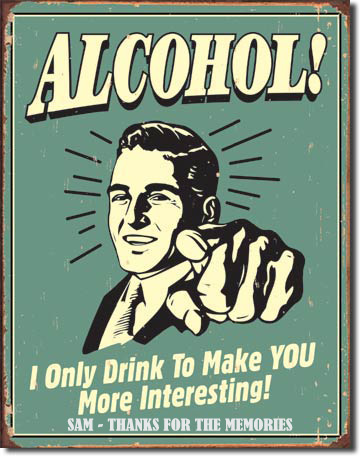
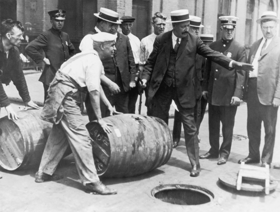
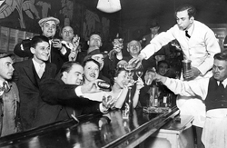

The official definition of a "cocktail" according to the modern Merriam-Webster Dictionary is "an iced drink of wine or distilled liquor mixed with flavoring ingredients." That's a pretty broad definition, but reflects the modern practice of referring to almost any mixed drink as a cocktail.
The first published definition of the Cocktail appeared in an editorial response in of 1806. This read: "Cocktail is a stimulating liquor, composed of spirits of any kind, sugar, water and bitters. It is this definition of ingredients that we continue to use when referring to the 'ideal' cocktail. any mixed drink as a cocktail.

People have been mixing drinks for centuries, but it wasn't until the 17th and 18th centuries that the precursors of the cocktail (the Slings, Fizzes, Toddiesand Juleps) became popular enough to be recorded in the history books. It is unclear where, who, and what went into the creation of the original cocktail, but it seems to be a specific drink rather than a category of mixed drinks during that time.
The first published reference to the cocktail appears in the Farmer's Cabinet (Amherst, New Hampshire, April 28, 1803). The spoof editorial tells of a "lounger" who, with an 11 a.m. hangover, "…Drank a glass of cocktail - excellent for the head…" In Imbibe!, David Wondrich attributes the first known cocktail recipe in print to Captain J.E. Alexander in 1831 who calls for brandy, gin or rum in a mix of "…a third of the spirit to two-thirds of the water; add bitters, and enrich with sugar and nutmeg…”
U.S. Prohibition Era: January 16, 1920 through December 5, 1933

The prohibition of alcohol in the 1920's and 30's in the United States is one of most famous, or infamous, times in recent American history. The intention was to reduce the consumption of alcohol by eliminating businesses that manufactured, distributed and sold it. Considered by many as a failed social and political experiment, the era changed the way many Americans view alcoholic beverages, enhancing the realization that federal government control cannot always take the place of personal responsibility. We associate the era with gangsters, bootleggers, speakeasies, rum-runners and an overall chaotic situation in respect to the social network of Americans. The period began in 1920 with general acceptance by the public and ended in 1933 as the result of the public's annoyance of the law and the ever-increasing enforcement nightmare.
